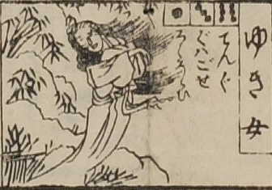

雪女；ユキオンナ，女；オンナ

雪女。髪を長く垂らし、着物をまとっている。両袖を胸の前で合わせて立っている。背景に雪に埋もれた笹が描かれている。
出典：親書誌：U426_nichibunken_0082：新版妖怪飛巡雙六；シンパンヨウカイトビマハリスゴロク／日付：2007／資源識別子：U426_nichibunken_0082_0022_0000
Copyright (c)2010- International Research Center for Japanese Studies, Kyoto, Japan. All rights reserved.